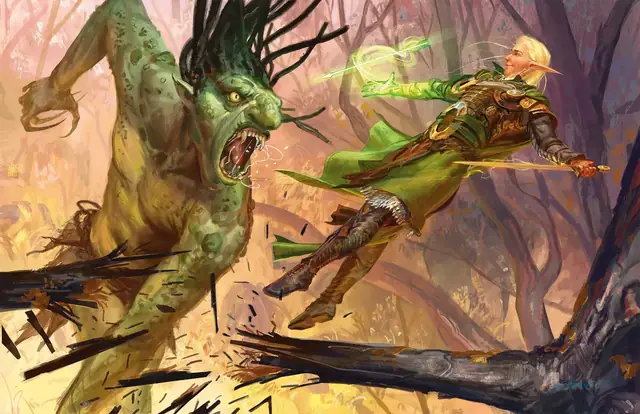

Кислотная стрела Мельфа
Melf’s Acid Arrow
2 уровень, Воплощение

Время сотворения Действие
Дистанция 90 футов
Компоненты В, С, М (порошок листьев ревеня)
Длительность Мгновенная
Классы Волшебник
Подклассы Алхимик (Артефактор)
Мерцающая зелёная стрела летит к цели в пределах дистанции, разлетаясь брызгами кислоты. Совершите дальнобойную атаку заклинанием по цели; при попадании она получает 4к4 урона Кислотой от атаки и ещё 2к4 урона Кислотой в конце своего следующего хода. При промахе стрела лишь обрызгивает цель кислотой: она получает только половину урона от атаки.
Используя ячейку заклинания большего уровня. И урон от атаки, и последующий урон увеличиваются на 1к4 за каждый уровень ячейки выше 2-го.